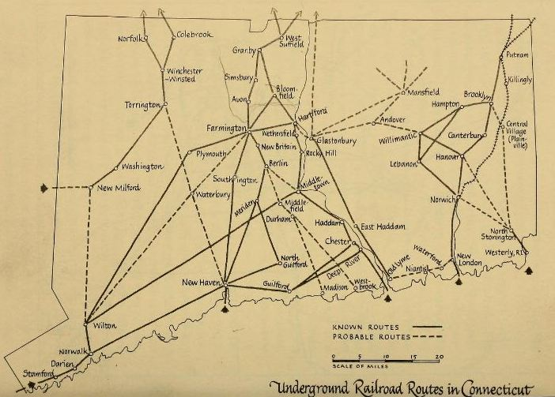
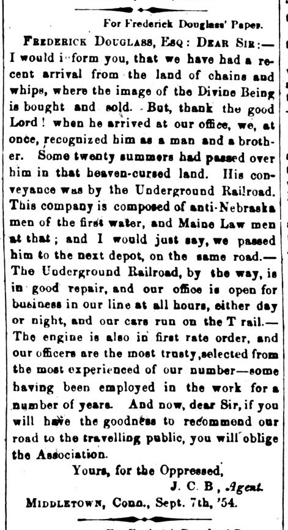
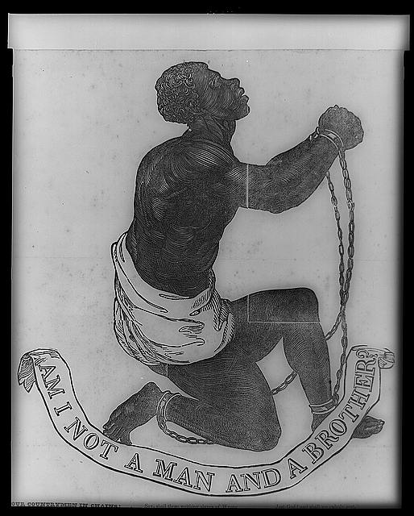
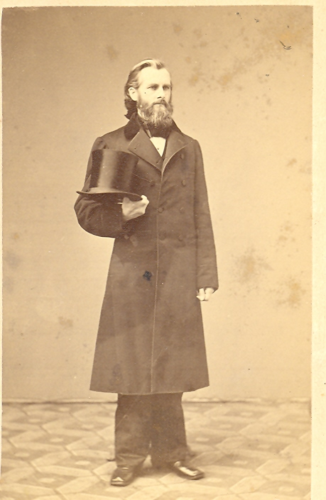
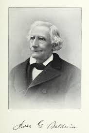
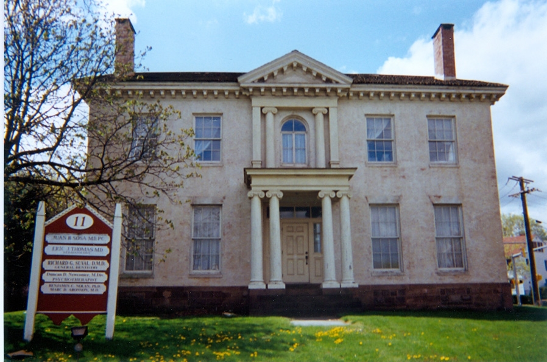

Middletown as a Way Station
Primary Source: Middletown as a “Way Station”
“The runaways who reached these Middletown abolitionists generally did so… by the Connecticut River line or one of its laterals; but the Underground Railroad provided a highly adaptable system.”
— Horatio Strother, The Underground Railroad in Connecticut, Chapter 11 p. 150
Strother’s description reveals that Middletown’s role in the Underground Railroad cannot be reduced to a single route or isolated stop. Instead, the city functioned within a flexible system of movement shaped by geography, secrecy, and local support networks. Its position along the Connecticut River allowed freedom seekers to move northward while adapting to danger and opportunity.
Middletown, Connecticut was not simply a northern town sympathetic to abolition. It was part of a larger freedom network shaped by Black churches, Black-owned property, abolitionist families, and coded systems of communication. Located along the Connecticut River and connected to Hartford, New Haven, New York, and routes farther north, Middletown functioned as a place where freedom seekers could be recognized, sheltered, and moved onward.

Horatio Strother’s mapping of Underground Railroad routes in Connecticut, showing known and probable pathways connecting coastal towns, river cities, and inland communities such as Middletown. These routes illustrate how the state functioned as a network of movement rather than a single fixed path.
The Beman Triangle and Black Community Life
At the center of Middletown’s Underground Railroad history was the free Black community that developed around what is now known as the Beman Triangle. This neighborhood was not only residential; it was political, religious, and abolitionist. Its significance came from the fact that Black residents built institutions that supported freedom in practical ways: churches, homes, mutual aid networks, and antislavery organizations.
“In 1828 a group of colored people gathered… where they organized the African Methodist Episcopal Zion Church… and when the Reverend Jehiel C. Beman became its pastor… it found its guiding spirit.”
— Strother, Chapter 11 p. 153
Black Churches as the Infrastructure of Resistance
The role of Middletown in the Underground Railroad cannot be understood without recognizing the central importance of Black churches. As Donohue and Bayers explain, African American churches in Connecticut were not only places of worship, but also social and political centers that organized abolitionist activity, hosted speakers, established schools, and even functioned as stations on the Underground Railroad.
“African-American churches served as social and political platforms… serving as stations on the Underground Railroad… safe places to worship, discuss issues, and hold meetings.”
— Donohue & Bayers, Fortresses of Faith
The Cross Street A.M.E. Zion Church was especially important. Founded by free African Americans, it became a spiritual and political center for Middletown’s Black community. In the context of the Underground Railroad, a church was more than a place of worship. It could serve as a trusted space where information circulated, visitors were received, resources were gathered, and antislavery commitments were sustained.
Jehiel Beman and the Language of the Railroad
Jehiel Beman’s 1854 letter in Frederick Douglass’s newspaper is one of the most important pieces of evidence linking Middletown to the Underground Railroad. Writing in coded railroad language, Beman described the arrival of an enslaved man in Middletown and suggested that the local “office” was open at all hours. This language treated the Underground Railroad as if it were an ordinary transportation system, but abolitionist readers would have understood its deeper meaning.

Jehiel Beman’s 1854 letter to Frederick Douglass’ Paper used coded Underground Railroad language to describe Middletown as an active station.
Beman’s description also reveals the moral meaning of the Underground Railroad. The man who arrived in Middletown had survived years of slavery, but upon arrival he was recognized as “a man and brother.” This phrase connects Middletown’s local activism to a broader abolitionist tradition that insisted on the humanity of enslaved people in a society built on denying that humanity.

“Am I not a man and a brother?” became one of the most recognizable images and slogans of the transatlantic antislavery movement.
Black Women’s Antislavery Organizing
Middletown’s Black abolitionist history also included women’s organizing. Nancy and Clarissa Beman helped found the Colored Females’ Anti-Slavery Society of Middletown in 1834. Their work shows that Black women were not simply supporters of abolitionist men; they were organizers in their own right. Through fundraising, moral argument, church networks, and community leadership, Black women helped sustain the antislavery infrastructure that made resistance possible.
The Geography of Resistance
“The Underground Railroad… formed a powerful yet often unrecognized engine… connecting family, church, and community.”
— Cheryl Janifer LaRoche, Free Black Communities and the Underground Railroad
LaRoche reframes the Underground Railroad as a system rooted in collective Black life rather than isolated acts of assistance. Families, churches, and free Black communities operated together to create what she describes as a “geography of resistance," a network of safe spaces, communication channels, and social relationships that allowed freedom seekers to move through a hostile landscape.
When viewed through LaRoche’s framework, maps of Underground Railroad routes take on new meaning. These pathways did not simply connect locations, they followed the presence of Black communities and churches. As LaRoche argues, free Black settlements consistently aligned with Underground Railroad routes, forming the hidden infrastructure that made escape possible.
White Abolitionist Allies: Benjamin Douglas and Jesse Baldwin
Former mayor of Middletown, Benjamin Douglas (1816–1894), was an influential figure whose role in the Underground Railroad reveals the complex position of white abolitionists within the movement. A successful businessman who later became mayor, Douglas was an outspoken opponent of slavery and a founding member of the Middletown Anti-Slavery Society. His home at 11 South Main Street has been identified as a possible Underground Railroad stop, and his factory served as a site for abolitionist meetings; activities that sometimes provoked hostility and attack.
Douglas’ position is particularly significant because of his relationship to political power. As mayor, he operated within a legal system that enforced laws such as the Fugitive Slave Act of 1850, yet he publicly opposed those laws and supported abolitionist efforts. His life illustrates how some individuals navigated these contradictions by working within formal political structures while simultaneously supporting actions that undermined them. In this sense, Douglas’ home functioned not only as a place of refuge, but as a site where law and resistance intersected.
Alongside Douglas, Jesse Baldwin emerges as another key figure in Middletown’s abolitionist network, demonstrating how anti-slavery activism was embedded in everyday life and local relationships. A co-founder of the Middletown Anti-Slavery Society, Baldwin’s commitment extended beyond public advocacy into personal practice. According to commemorative accounts, he deliberately avoided goods produced by enslaved labor, even carrying his own supply of free-produced sugar rather than consume slave-made products.

Benjamin Douglas, Middletown abolitionist and public figure.

Jesse Baldwin, Middletown abolitionist connected to local antislavery activity.

The Benjamin Douglas House, associated with Middletown’s abolitionist history.
Why Middletown Matters
Middletown matters because it shows how the Underground Railroad depended on local Black institutions. The city’s role cannot be understood only through secret routes or famous white reformers. Its deeper history lies in the Black families, churches, women’s societies, property owners, and political organizers who made freedom practical. In this sense, Middletown was not just a stop on the way north. It was a place where Black freedom was imagined, defended, and built.